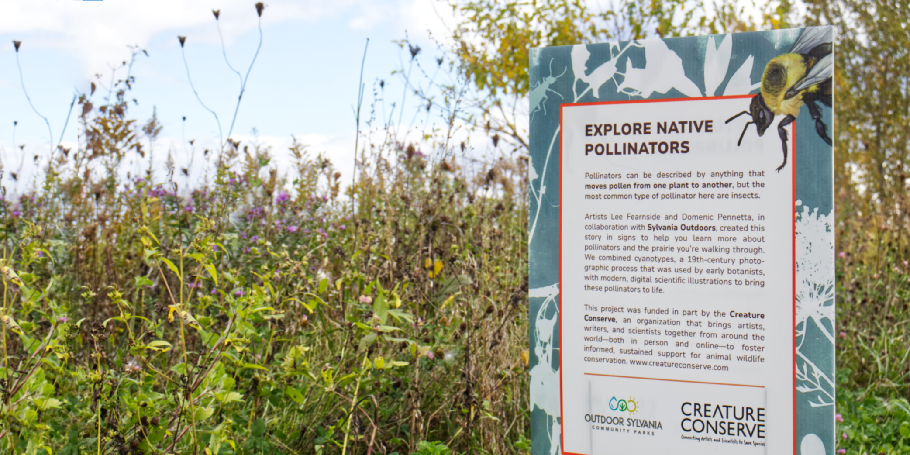

Ancient Acoustics

Discover Sounds from a Lost World!
Have you ever wondered what sounds prehistoric animals like the dinosaurs might have made? Did they roar like how they are often depicted in media? Or did they make softer sounds? Maybe even chirped or sang like birds?
With recent discoveries, paleontologists have been able to determine what vocalizations dinosaurs and other prehistoric animals likely made in the past. This book explores how these animals made their own symphony of sounds used to attract mates, find food, and communicate with each other. The book features 11 prehistoric species and sheds light on what sounds they made and their amazing sense of hearing. Explore sounds that are now lost to time.
Pollinators help with fertilization by moving pollen from one plant to another, and are critical to plant diversity—80% of plants are dependent on pollinators to reproduce. We rely on them as well, as one out of three bites of food is created with the help of pollinators!
Species Spotlight:

Parasaurolophus:
This well-known hadrosaur dinosaur had a bizarre head crest that had perplexed paleontologists for decades. Some sources claimed their crest was used as a weapon, a means to detect foliage, or even a snorkel! But this dinosaur likely used this crest for display and for vocal communication. This crest acted as a resonating chamber to allow for their deep voices to span over greater distances.

Timurlengia:
Everyone knows the mighty Tyrannosaurus rex, but few have heard of its smaller, earlier relative: Timurlengia. Fossils of this early tyrannosaur provided paleontologists with a braincase, one that was large and possessed impressions made by a series of nerves. These impressions tell us that this dinosaur likely had a large brain with complex sensory systems, such as hearing. Tyranosaurs likely had complex senses before they grew to the immense sizes we are familiar with today!

Pulaosaurus:
In 2025, a new genus of dinosaur was uncovered in China that lived during the Middle Jurassic. This dinosaur had a remarkably preserved larynx, which was almost completely intact. Could the existence of this organ and surrounding soft tissue provide compelling evidence that dinosaurs were capable of making bird-like vocalizations?
The Start of a Series:
If Ancient Acoustics meets its goals, there will be additional books that will dive into other topics related to dinosaurs and prehistoric life. After learning about several species with remarkable vocalisation, there will be subsequent books that will focus on other topics, such as:
Monstrous Backs - Spotlighting Sail-backed Dinosaurs
Creative Crests - Exploring Dinosaurs with Decorated Displays
Prehistoric Pigments - Color Lost in Time
And more!